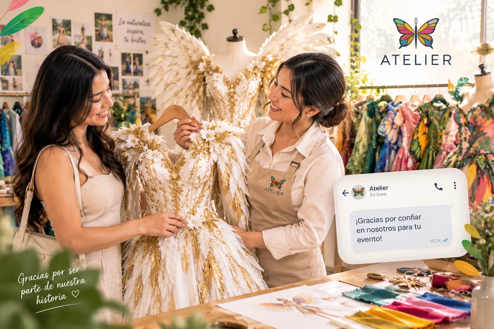

Elementos de identidad
Nombre Atelier, imagotipo de aguja y alas de mariposa, paleta multicolor, tipografía, eslogan, tono de comunicación y aplicaciones en prendas y materiales promocionales.
La forma en que Atelier se presenta, actúa y se relaciona con las personas: una marca creativa, artística, profesional, innovadora y acogedora.

Es la percepción que el público construye de Atelier a partir de sus diseños, la atención, la comunicación y cada experiencia con la marca. La identidad corporativa reúne los elementos que permiten expresar de forma coherente quiénes somos y qué nos diferencia.
Nombre Atelier, imagotipo de aguja y alas de mariposa, paleta multicolor, tipografía, eslogan, tono de comunicación y aplicaciones en prendas y materiales promocionales.
Identidad visual —lo que se ve—, verbal —lo que se dice— y cultural —los valores y comportamientos que orientan la experiencia del cliente—.
Creatividad, calidad, confort, responsabilidad, respeto y cuidado ambiental. Estos valores se reflejan en el trabajo artesanal y el ecodiseño inspirado en la Selva Central.

Atelier utiliza un lenguaje sencillo, amable y motivador. Su mensaje principal es: “Creamos vestuarios únicos y ecodiseños silvestres para inspirar”. El eslogan corporativo es: “Arte textil que florece con la naturaleza”.
Ver comunicación corporativa ↗El logotipo, la atención, los acabados, el empaque y las publicaciones deben comunicar la misma promesa: vestuarios únicos, experiencia cuidada y respeto por la naturaleza.
